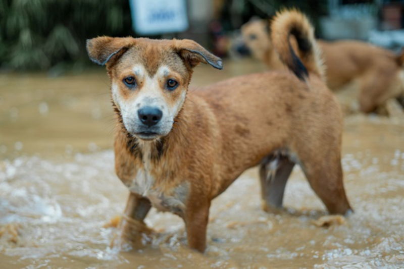
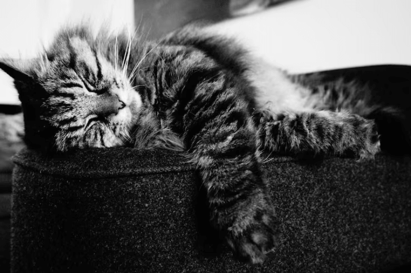

Acompanhe nossas últimas novidades, histórias de resgate, dicas de cuidados e eventos.
Destaques
Resgate de Emergência: Luna, a Sobrevivente das Enchentes
Publicado em: | Por: Lucas Luiz

Luna, resgatada das enchentes, agora está em recuperação.
A história de Luna é um lembrete do porquê o nosso trabalho é essencial. Encontrada debilitada na zona sul, ela agora recebe os cuidados necessários para encontrar um lar. Leia a história completa...
500 Castrações Realizadas no Mês: Um Marco de Saúde Pública
Publicado em: | Por: Lucas Luiz
Nossa Campanha Social de Castração atingiu um marco histórico na região leste.
Graças ao apoio de nossos doadores, conseguimos realizar mais de 500 procedimentos de castração, controlando a população de rua e garantindo mais saúde aos animais. Saiba mais sobre a campanha...
Dicas de Ouro: Como Preparar Sua Casa para um Gato Adotado
Publicado em: | Por: Lucas Luiz

Dicas práticas para a transição do abrigo para o lar permanente.
Adotar um gato é maravilhoso, mas a preparação é a chave para uma adaptação tranquila. Cobrimos desde a caixa de areia ideal até os melhores brinquedos anti-tédio. Confira as dicas!